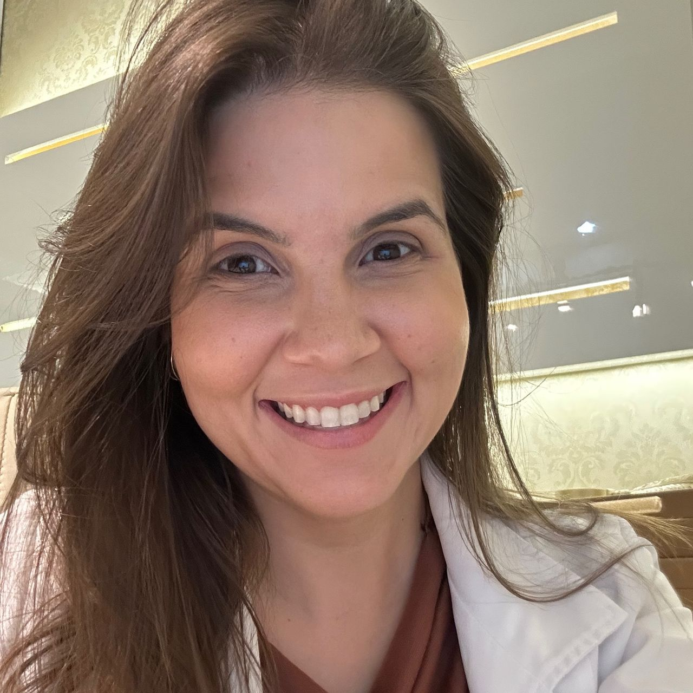

Início · Conheça a Dra. Camila Medeiros
Conheça a Dra. Camila Medeiros
Formação em Medicina, Cirurgia Geral e Coloproctologia. Atendimento a adultos em Natal.
Coloproctologia
Formação e trajetória
- 2009–2014
Medicina · UFCG
Universidade Federal de Campina Grande.
- 2016–2018
Cirurgia Geral · HUOL
Residência no Hospital Universitário Onofre Lopes.
- 2018–2020
Coloproctologia
Residência no Hospital Barão de Lucena.
Coloproctologia
Doenças orificiais e colorretais
Avaliação clínica
Consulta de Coloproctologia e acompanhamento de hemorroidas, fissuras e constipação.
Procedimentos
Possibilidades cirúrgicas e avaliação pré-operatória conforme indicação individual.
Alterações da evacuação, fístulas, abscessos e acompanhamento de cisto pilonidal também são abordados nestas páginas.
Coloproctologia
Informação que aproxima da avaliação

“A nossa especialidade depende muito de exame físico.”
— Dra. Camila Medeiros
Conversa
Suas dúvidas ajudam a organizar o primeiro encontro.
Avaliação
História clínica e exame físico dão contexto aos sintomas.
Coloproctologia
Identificação e atendimento
Registros
CRM-RN 8070 · RQEs 4049 e 4052.
Atendimento
Clínica Hélice, Rua Ângelo Varela, 1362, Tirol, Natal/RN. Com hora marcada.
Converse com a recepção
Qual dia e horário funcionam para você?
Um pedido simples para dar o primeiro passo.
Dúvidas frequentes
Perguntas sobre este cuidado
As informações do site substituem uma consulta?
Não. São informações educativas, sem diagnóstico nem indicação individual de tratamento.
Contato
Vamos começar por uma consulta?
Atendimento presencial a adultos em Natal, com hora marcada. A recepção confirma a disponibilidade.